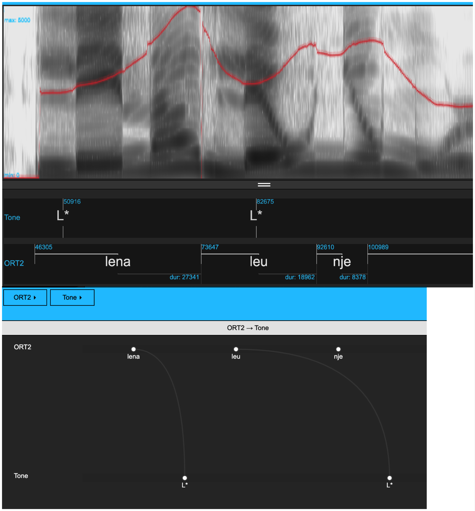

library(tidyverse)
library(emuR)
library(wrassp)
sourceDir <- "./testsample"
targetDir <- "./emu_databases"6 Configuring emuR for ToBI annotations
6.1 Objective and preliminaries
The objective of this chapter is to show how to go from a collection of .wav and .txt files to an Emu database that is set up for tones-and-break indices (ToBI) annotation. More specifically, the aim is to configure a database to have a configuration like that shown in Figure 6.1.

The starting point is the text collection of Albanian data analyzed in Chapter 5.
We will also see how an annotation level with syllable structures can be ascertained from a database by creating a CV-style annotation level.
We assume that you already have an R project called ipsR and that it contains the directories emu_databases and testsample. If this is not the case, please go back and follow the preliminaries chapter. As in previous chapters, we start by loading the usual libraries and renaming the directories to sourceDir and targetDir.
6.2 Forced alignment
The first task is to force-align these Albanian data. The commands will be presented in this section without detailed comment since these were already discussed in Chapter 5. The resulting Emu database will be stored as alb2_DB (to distinguish it from the one created in the Chapter 5).
We first create and load the Emu database using convert_txtCollection() and load_emuDB(), and subsequently use runBASwebservice_all() to run the MAUS pipeline over the data.
path.albanian <- file.path(sourceDir, "albanian")
convert_txtCollection(dbName = "alb2",
sourceDir = path.albanian,
targetDir = targetDir,
verbose = FALSE)
alb2_DB <- load_emuDB(file.path(targetDir, "alb2_emuDB"),
verbose = FALSE)
runBASwebservice_all(alb2_DB,
transcriptionAttributeDefinitionName = "transcription",
language = "sqi-AL",
runMINNI = FALSE,
verbose = FALSE)6.3 Configuring a database for ToBI annotations
The database currently has an ITEM-type annotation level ORT that dominates an ITEM-type level MAS containing syllabifications. MAS dominates the SEGMENT-type level MAU, which contains the phonetic segmentation. You can confirm this either by serve()ing the database or by calling summary(alb2_DB).
Our next task is to add a level Tone for marking intonational events and to add a new SEGMENT level, ORT2 which contains word-level segmentations. The tonal events of the Tone level and annotations of the ORT2 level are to be linked automatically, just as in Figure 6.1.
The steps required to get there are as follows:
- Create a
SEGMENT-type level calledORT2containing word annotations linked to times. - Create a
Tonelevel and link it toORT2. - Calculate and display pitch tracks.
- Annotate the
Tonelevel and link the annotations automatically to the word level annotations inORT2.
6.3.1 Create and display word level annotations
First we create and display word level annotations. This is a four step process:
First, create a SEGMENT-type annotation level called ORT2.
As covered in Chapter 4, this can be done with the add_levelDefinition() function like so:
add_levelDefinition(alb2_DB,
name = "ORT2",
type = "SEGMENT",
verbose = FALSE)We can confirm that this step was successful with the function list_levelDefinitions():
list_levelDefinitions(alb2_DB)Second, make a list of all words in the database.
We can do this by using the query() function to find all annotations in the ORT level. We’ll remove the end column from the resulting object to ensure as we don’t need end times for these labels, and including it can create issues down the line. (As in previous chapters, we’ll also remove the db_uuid column from the printed results because the data frame is more legible this way).
text.s <- query(alb2_DB, "ORT =~ .*") %>% select(-end)
text.s %>% select(-db_uuid)We can use the segment list generated by the query() above to populate our new level ORT2. We simply need to change the columns attribute and level so they show the value ORT2 instead of ORT:
text.s$attribute <- "ORT2"
text.s$level <- "ORT2"Third, add word-level annotations to ORT2.
We can now pass text.s on to the function create_itemsInLevel() like so:
create_itemsInLevel(alb2_DB, text.s,
verbose = FALSE)It is now possible to query() the word level annotations directly from ORT2:
query(alb2_DB, "ORT2 =~ .*") %>% select(-db_uuid)Fourth, display the annotations of ORT2 time-aligned to the signals.
Because ORT2 is a SEGMENT-type level and not an ITEM-type level, we can now display word-level annotations underneath the signals in the EMU-webApp. However, if we serve() the database now, only the segment-level annotations in MAU can be seen. As covered in Chapter 4, this can be controlled with the set_levelCanvasesOrder() function like so:
set_levelCanvasesOrder(alb2_DB,
perspectiveName = "default",
order = "ORT2")serve()ing the database now will show only the word-level annotations in ORT2 underneath the signals:
serve(alb2_DB, useViewer = FALSE)6.3.2 Create a Tone level and link it to ORT2
Creating new annotation level called Tone and linking it to ORT2 is a three-step process:
First, create the new annotation level named Tone.
We do this with the add_levelDefinition() function, just as we did earlier when creating ORT2. Tone should be an EVENT-type level, since we want to mark intonational targets as single points in time.
add_levelDefinition(alb2_DB,
name = "Tone",
type = "EVENT",
verbose = FALSE)Second, create the link between Tone and ORT2.
The function list_linkDefinitions() shows that there are no currently no links between Tone and ORT2:
list_linkDefinitions(alb2_DB)In order to allow for annotations in the two levels to be queried relative to each other, they need to be linked. On the assumption that a word can be associated with one or more tones, but that a given tone can only be associated with one word, the association between the two levels should be ONE_TO_MANY. The levels should therefore be linked in the following way with the add_linkDefinitions() function:
add_linkDefinition(alb2_DB,
type = "ONE_TO_MANY",
superlevelName = "ORT2",
sublevelName = "Tone")Calling list_linkDefinitions() again will confirm that the two levels are now linked:
list_linkDefinitions(alb2_DB)Third, display the Tone level.
As before, this can be done with the set_levelCanvasesOrder() function. We now need to specify both Tone and ORT2 in the order argument, like so:
set_levelCanvasesOrder(alb2_DB,
perspectiveName = "default",
order = c("Tone", "ORT2"))serve()ing the database again will now show both the Tone and ORT2 levels underneath the signals:
serve(alb2_DB, useViewer = FALSE)6.3.3 Calculating and displaying F0
Calculating F0 and displaying it in the webApp is a three-step process. Most of these steps were covered in Chapter 4, so only a brief summary is given here.
First, calculate F0.
We can do this using the function add_ssffTrackDefinition with the ‘on the fly function’ mhsF0() (see Chapter 4).
add_ssffTrackDefinition(alb2_DB,
name = "pitch",
onTheFlyFunctionName = "mhsF0",
verbose = FALSE)We can confirm that this worked with the function list_ssffTrackDefinitions():
list_ssffTrackDefinitions(alb2_DB)Second, configure the database to show the F0 track.
As explained in Chapter 4, the pitch data can be displayed with the function set_signalCanvasesOrder(). Currently, only the waveform and spectrogram are displayed, as confirmed with the get_signalCanvasesOrder() function:
get_signalCanvasesOrder(alb2_DB, perspectiveName = "default")[1] "OSCI" "SPEC"In order to display the pitch data underneath the spectrogram, use set_signalCanvasesOrder() like follows:
set_signalCanvasesOrder(alb2_DB,
perspectiveName = "default",
order = c("OSCI", "SPEC", "pitch"))(Alternatively, if you have installed and loaded emuhelpeR, you can display it like so: alb2DB %>% add_signal_canvas("pitch").)
Overlaying pitch on the spectrogram
If you have the library emuhelpeR installed, you can overlay pitch on the spectrogram using the signal_on_spec() function like so:
library(emuhelpeR)
alb2_DB %>% signal_on_spec("pitch")(The function clear_spec() from emuhelpeR can be used to remove the signal from the spectrogram if you no longer wish to display it there.)
If you do not have emuhelpeR installed, the process is a bit more intricate. For this you will usually use a plain text editor to change the database’s configuration JSON file. This file always has the same name as the database + config.json and is stored in the same directory as the database. Once you’ve found this file, you can proceed as follows:
- Optionally make a backup copy of the the
alb2_DBconfig.jsonfile in case anything goes wrong. - Open
alb2_DBconfig.jsonwith a plain text editor, e.g. Notepad in Windows. - Search the file for the text string
assign. You should find a line with the following contents:
"assign": [],
- Carefully replace this line with the following:
"assign": [{ "signalCanvasName": "SPEC", "ssffTrackName": "pitch" }],
- Save the file.
serve()the database again.
In principle, the configuration JSON file can also be edited in R, e.g. using the rjson library. You should probably avoid this unless you’re an advanced R user – it’s a finnicky process and a lot can go wrong.
6.3.4 Automatically linking annotations at the Tone level
The first task here is to make a few annotations. More specifically, add two pitch targets (e.g., L* to Lena, L* to leu) to the utterance 0001BF_1syll_1 as in Figure 6.1. See Chapter 3 for details of how to annotate in the Emu-webApp.
The next task is to automatically link the annotations at the Tone level to the corresponding words in the ORT2 level. We can do this using the function autobuild_linkFromTimes(). This function links an annotation at the Tone level to an annotation at the ORT2 level if the Tone annotation falls within the segment segment boundaries of the ORT2 annotation. In other words, if the start and end times of an ORT2 annotation are denoted t1 and t2, and the time of a Tone annotation is denoted simply t, then annotations at the two levels are linked if t1 < t < t2.
autobuild_linkFromTimes(alb2_DB,
superlevelName = "ORT2",
sublevelName = "Tone",
verbose = FALSE)If you serve() the database again and look at the hierarchy view, you can confirm that the links were indeed created.
It should now be possible to query() tones with respect to words and vice-versa. For example, the below query finds all words at the ORT2 level with an annotated pitch accent at the Tone level. (Much more detail on querying follows in Chapter 7!)
query(alb2_DB, "[Tone =~.* ^ #ORT2 =~.*]") %>% select(-db_uuid)6.4 Adding a CV level
It can be helpful to have another annotation level in which every vowel corresponds to V and every consonant to C. This could then be used to establish the syllable types in the database. To do this, a new level called CV will be created that is an attribute of the MAU level (which contains the segment annotations). We do this with the add_attributeDefinition() function:
add_attributeDefinition(alb2_DB,
levelName = "MAU",
name = "CV",
verbose=FALSE)Here we query all segments found at the MAU level in the database:
mau.s <- query(alb2_DB, "MAU =~ .*")
mau.s %>% select(-db_uuid)We can find unique segments (and their frequencies) using the count function available in the tidyverse:
count(mau.s, labels)We’ll store the vowels in a vector vowel_phonemes:
vowel_phonemes = c("a", "E", "i", "O", "u", "4")With a few tidyverse commands, we can wrangle mau.s to have the label V for vowels and C for consonants (i.e., the labels that are not in the vowel_phonemes vector), and store this as a new data frame called new_items.
We first change the values in the attribute column to CV using the mutate() function. We use the rename() function to change the labels column with phonemic annotations to old_labels. Finally we use mutate() in combination with case_when() to store the label V in labels wherever old_labels has a phonemic annotation found in our vowel_phonemes vector, and to store the label C in all other cases. For more resources on the tidyverse see the initial setup chapter.
new_items <- mau.s %>%
mutate(attribute = "CV") %>%
rename(old_labels = labels) %>%
mutate(labels = case_when(old_labels %in% vowel_phonemes ~ "V",
TRUE ~ "C"))Calling the count() function on new_items will give us the number of consonants and vowels in the database:
count(new_items, labels)We can add these new annotations to the attribute level CV using the update_itemsInLevel() function like so:
update_itemsInLevel(alb2_DB,
itemsToUpdate = new_items,
verbose = FALSE) We can now query() the CV level for all of its annotations:
seglist_cv <- query(alb2_DB, "CV =~ .*")
count(seglist_cv, labels)More importantly, it is now possible to identify the different types of syllable structure. Recall that the MAS level parses the Phoneme level into syllables.
syll <- query(alb2_DB, "MAS =~ .*")
count(syll, labels)Here are the syllables in terms of their representation at the CV tier:
syll.cv <- requery_hier(alb2_DB, syll, level = "CV")
count(syll.cv, labels)Don’t worry if you don’t yet understand how the query()ing functions work – much more on that in Chapter 7!
6.5 Functions introduced in this chapter
signal_on_spec(): Overlays a signal, such as pitch, on top of the spectrogram in theEmu-webApp. (RequiresemuhelpeRto be installed).count(): Provides a count of all instances of a factor variable in a data frame or tibble.requery_hier(): Requeries an emuDB based on an existing query. Will be discussed much more in Chapter 7.